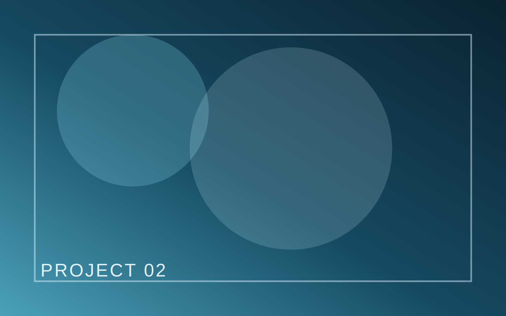

Scene Coverage

Crimson Ring
A high-contrast narrative piece built around momentum, fragmented perspective, and a visual language that tracks psychological escalation.
RoleCinematographer
FormatShort Narrative
StatusIn Development
FocusColor contrast and kinetic framing
Visual Intent
The concept centers on directional color contrast, controlled handheld instability, and selective depth to mirror the lead character’s tightening emotional loop.
Execution Notes
Color Strategy
Cutting Rhythm